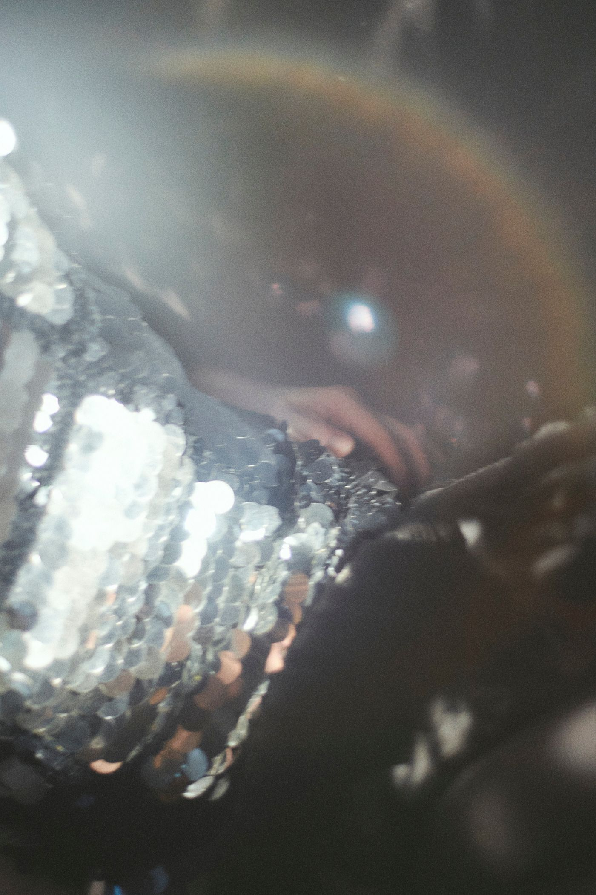
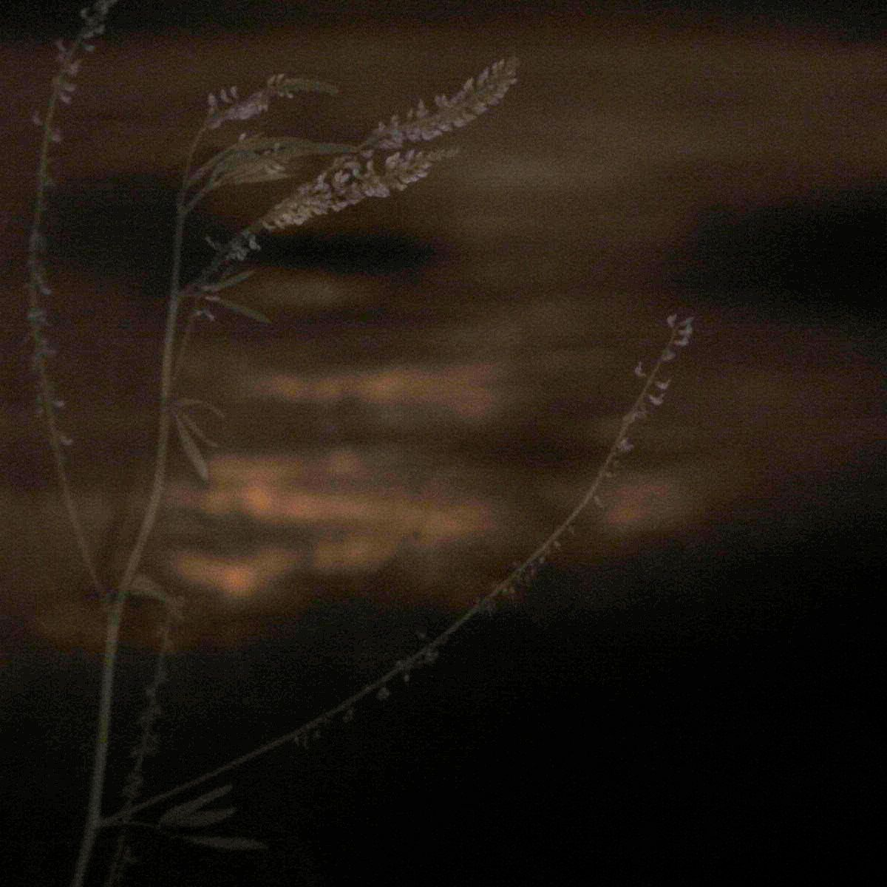

Un disco escrito en la orilla de una noche que no termina. Sintetizadores que llegan de otra década, beats mínimos y un corazón roto que brilla como lentejuela.
Producido con Antü Filardi Sabin · Mezcla Juan Stewart · Mastering Ariel Schlichter, Berlín · Puddle Label, 2026

Lu Glass hace canciones con máquinas viejas y palabras exactas.
Desde El Rayo (2016) viene armando paisajes de sintetizador para historias de amor que no terminan bien. Abrió para The Radio Dept., tocó en Primavera Sound Buenos Aires y hoy suma a Paula Díaz Mendilharzu y su arsenal de Roland, MPC y Minilogue.

Shows, festivales, ciclos y prensa.
lucilaglass@gmail.com